全国各省 Landsat TM 分幅遥感影像数据
Landsat TM remote sensing image data of China
1. 数据介绍
Landsat主题成像仪 (TM)从1982年发射至今，其工作状态良好，几乎实现了连续的获得地球影像。LandsatTM影像包含7个波段，波段1-5和波段7的空间分辨率为30米，波段6（热红外波段）的空间分辨率为120米。南北的扫描范围大约为170km，东西的扫描范围大约为183km。
随着卫星遥感影像的大量获取和应用，遥感影像的使用范围越来越广，针对不同应用需求，处理制作了基于省级行政区划分幅的 Landsat TM 2006年遥感影像产品，对于政府部门、企事业单位等了解区域地貌类型、资源状况、城市分布以及指导规划等研究都有很大的帮助。
2. 数据属性
空间范围：全国（各省）
时间范围：2006
空间分辨率：90m
数据类型：栅格|GeoTIFF（7波段）
投影坐标：Lambert Conformal Conic (基准：WGS 84)
其他说明
存储结构：本数据集包含2006年分幅影像产品，完全按照国家行政区范围进行图像拼接处理。数据源为对应时期Landsat5卫星正射产品数据，每一个行政区域数据存储在一个压缩文件中，压缩文件中包含产品多波段图像文件（TIFF）、产品描述文件（XML）、产品缩略图文件（JPG）。
分块标识：用于GeoTIFF数据文件的分块标识，R-行号，C-列号。
3. 数据预览图
| 321真彩色合成 | 432标准假彩色合成 | 信息量最丰富组合451 | 遥感解译常用组合741 |
| 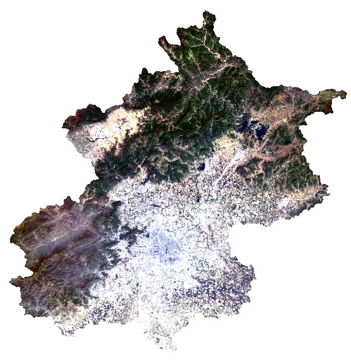 | 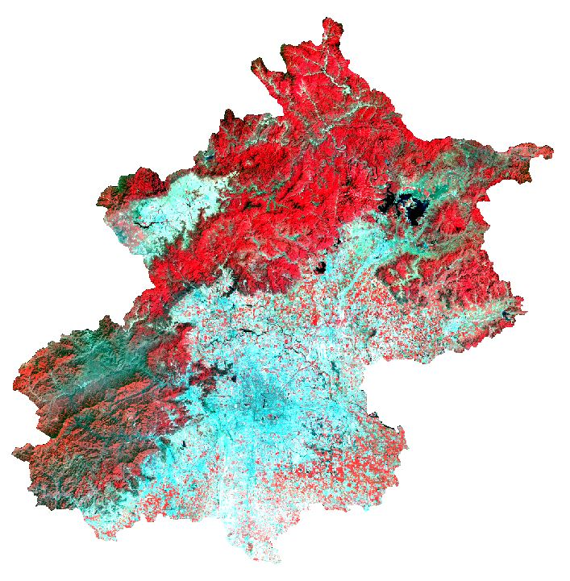 | 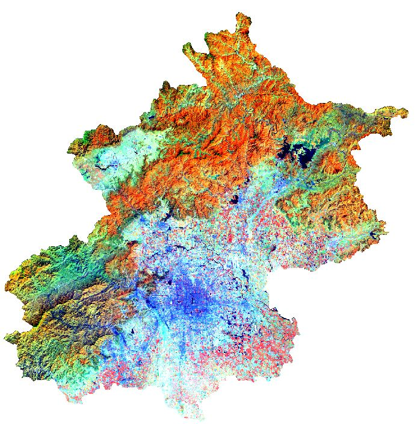 | 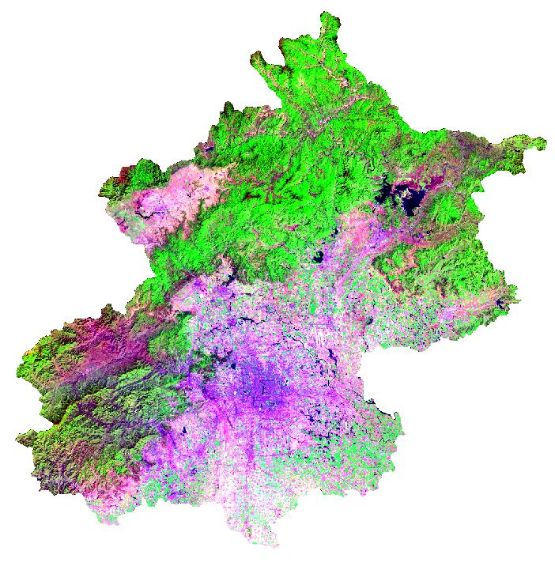 |
| 北京 | 重庆 | 山东 | 新疆 |
| 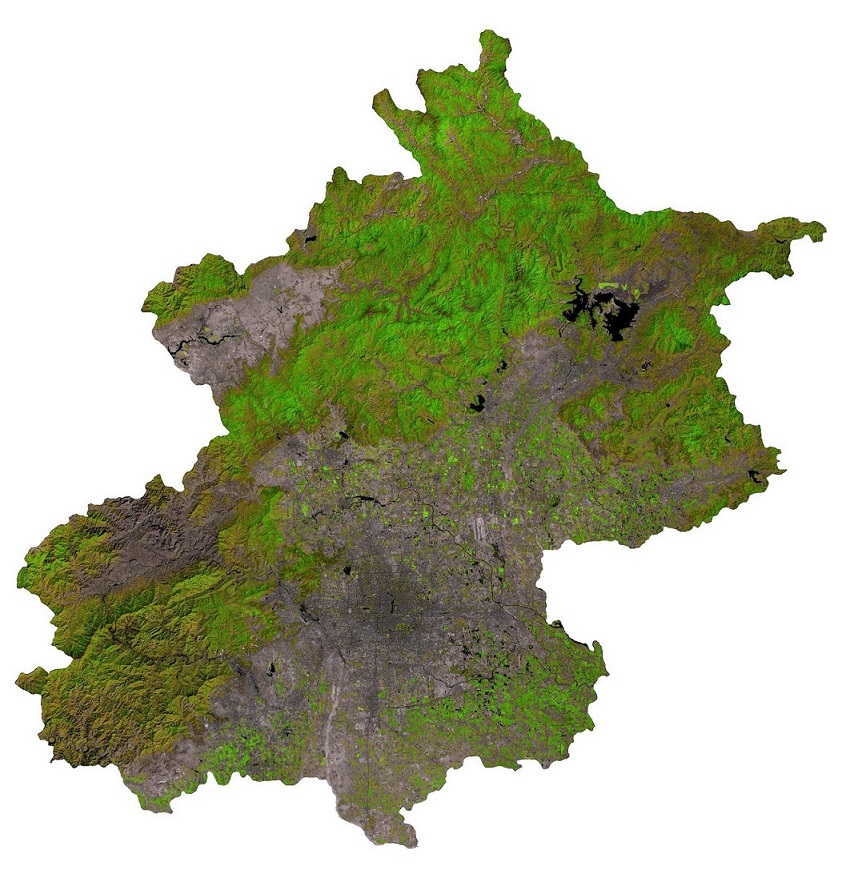 | 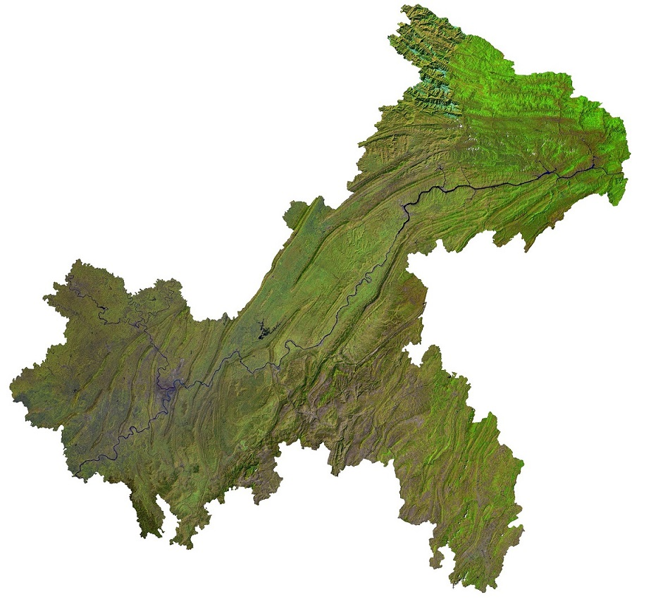 | 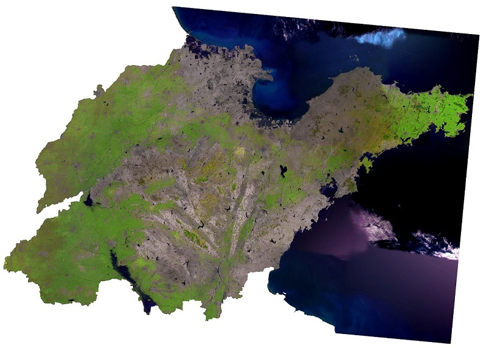 | 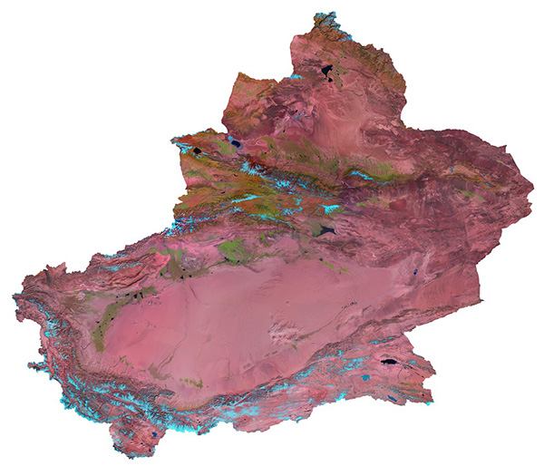 |
| 广东 | 四川 | 湖北 | 黑龙江 |
| 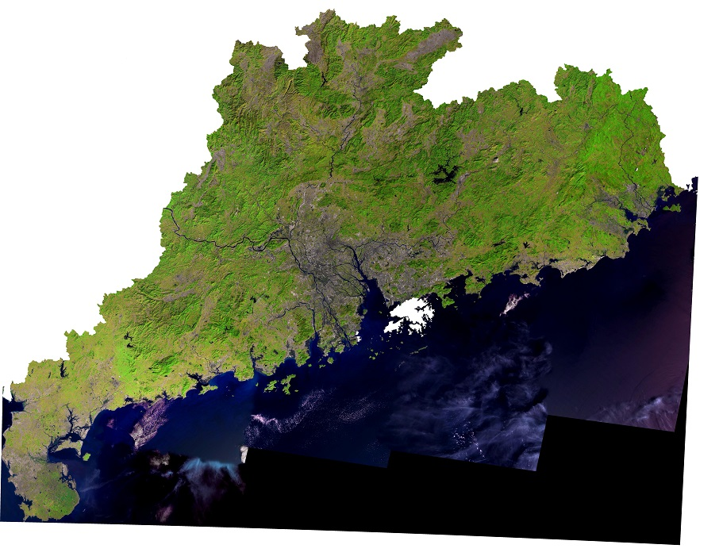 | 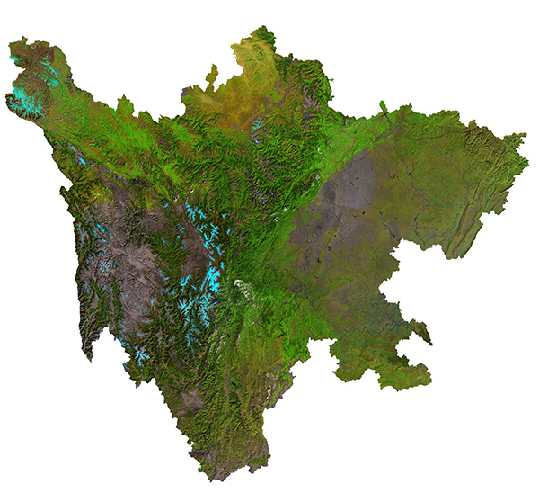 | 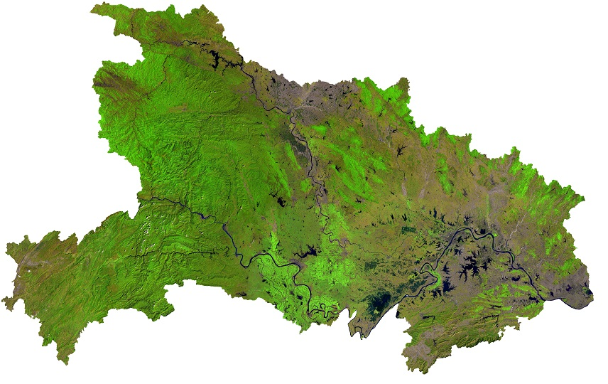 | 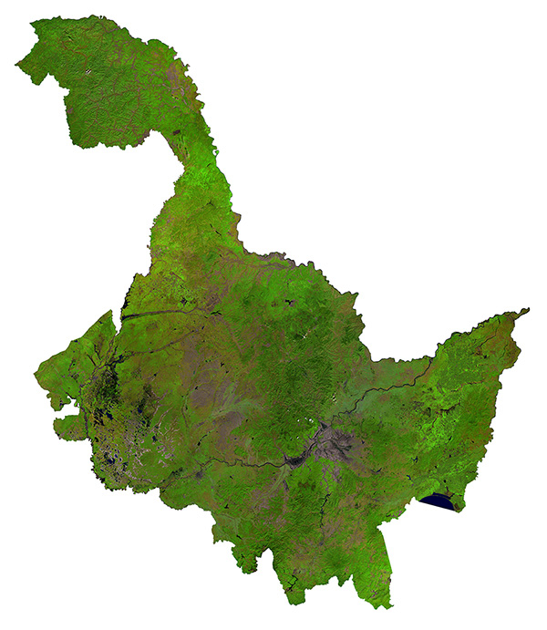 |
4. 数据下载
全国各省 Landsat TM 分幅遥感影像
| 编号 | 省份 | 年份 | 数据源 | 缩略图 | 数据大小 | 提取码 | 下载链接 |
|---|
建议使用Google浏览器，IE内核浏览器可能不正常显示下载按钮等！
Fighting, GISer!
最新博文